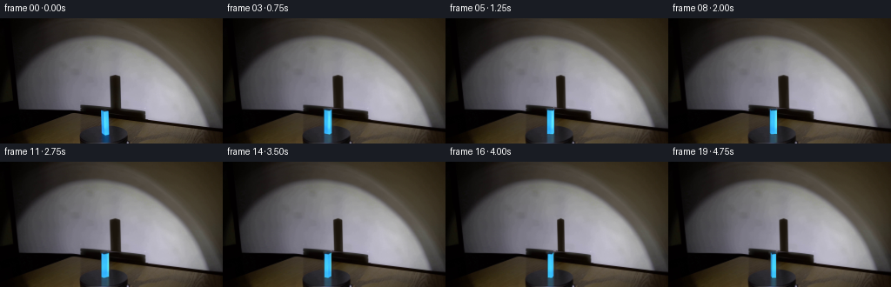
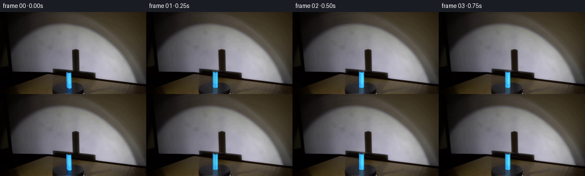
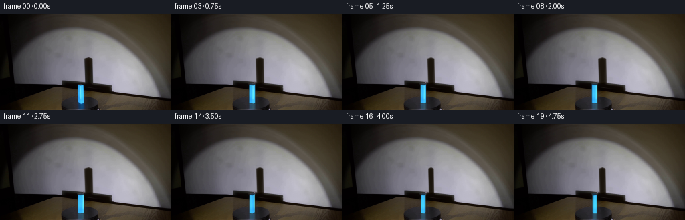
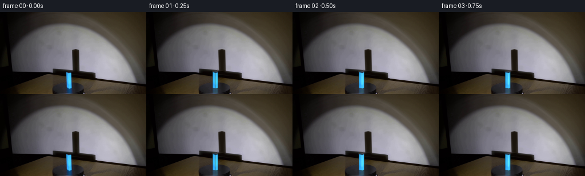
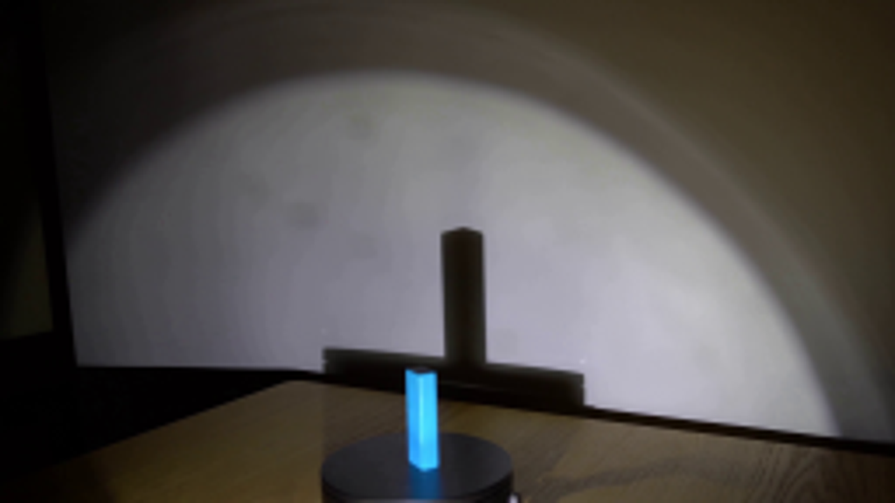
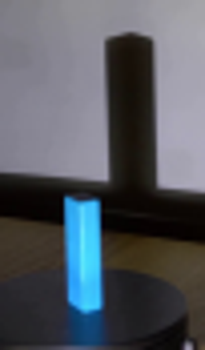
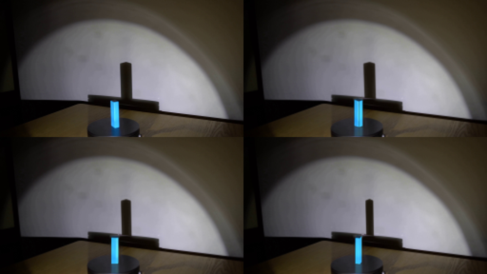
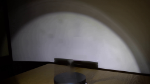
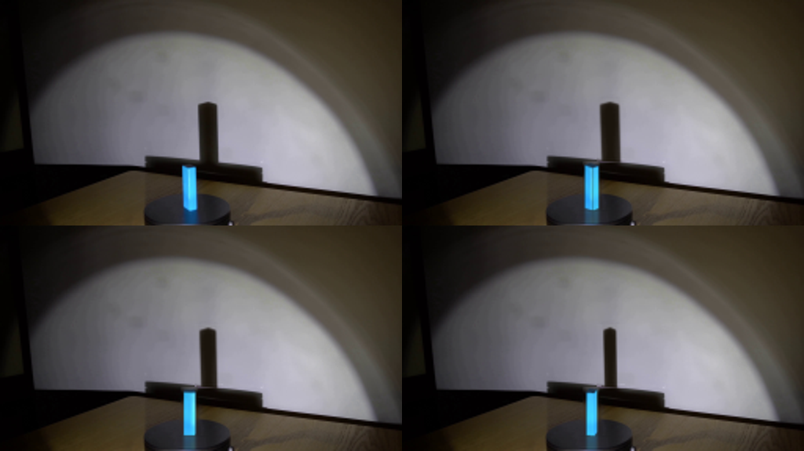

CODING AGENTS AS PIXEL WORLD MODELS
traex/GPT-6.1-Sol · 0075
点击播放 · 原生 RGB 像素
逐轮保存的候选
回放视频、检查图与代码变化。
每份候选均可单独播放。实际图片检查记录在下方工具轨迹中。
候选 01播放与检查图
点击播放 · 原生 RGB 像素


展开代码变化
--- 上一保存版本
+++ 本次保存版本
@@ -0,0 +1,188 @@
+from pathlib import Path
+import numpy as np
+from PIL import Image, ImageDraw, ImageFilter
+import cv2
+from scipy.ndimage import gaussian_filter
+from scipy.spatial import ConvexHull
+import artifact_io
+
+ROOT=Path(__file__).resolve().parent
+W,H=256,144
+S=4
+SRC=np.array(Image.open(ROOT/'first_frame.png').convert('RGB'))
+yy,xx=np.mgrid[:H,:W]
+
+# Restore just the small portions of the stationary background hidden by the prism.
+base=SRC.astype(float).copy()
+wall_limit=100.0+.087*(xx-92)
+wall_region=(xx>=124)&(xx<=141)&(yy>=63)&(yy<wall_limit+.2)
+# The projected light has a smooth local colour field. Interpolate across the
+# thin occlusion, retaining all of the remainder of the photographed wall.
+for y in range(63,105):
+ samples=np.r_[np.arange(114,124),np.arange(142,152)]
+ samples=samples[y < 100+.087*(samples-92)-.7]
+ if len(samples)<8: continue
+ for c in range(3):
+ co=np.polyfit(samples-132,SRC[y,samples,c].astype(float),2)
+ vals=np.polyval(co,np.arange(W)-132)
+ idx=wall_region[y]
+ base[y,idx,c]=vals[idx]
+# Preserve the fixed shadow of the turntable's rim and the wooden table.
+mask=np.zeros((H,W),np.uint8)
+cv2.fillPoly(mask,[np.array([[115,103],[125,103],[127,134],[126,142],[114,142],[114,134]])],255)
+clean=cv2.inpaint(SRC,mask,4,cv2.INPAINT_TELEA).astype(float)
+base[mask>0]=clean[mask>0]
+# Reflection has a smooth, broad cyan halo on the polished turntable.
+for y in range(134,143):
+ for c in range(3):
+ xs=np.r_[np.arange(108,114),np.arange(129,136)]
+ co=np.polyfit(xs-121,SRC[y,xs,c].astype(float),2)
+ for x in range(113,130):
+ blend=min(1.,(x-112)/2,(130-x)/2)
+ base[y,x,c]=(1-blend)*base[y,x,c]+blend*np.polyval(co,x-121)
+base=np.clip(base,0,255).astype(np.uint8)
+Image.fromarray(base).save(ROOT/'.tmp/background.png')
+BG=cv2.resize(base,(W*S,H*S),interpolation=cv2.INTER_CUBIC).astype(float)
+
+# An upright rectangular prism, with a camera above the near edge of the table.
+angle0=np.deg2rad(50.45)
+a=np.array([np.cos(angle0),np.sin(angle0)])*7.20
+b=np.array([np.sin(angle0),-np.cos(angle0)])*5.05
+height=27.45
+center=np.array([120.75,132.25])
+verts2=np.array([-a/2-b/2,a/2-b/2,a/2+b/2,-a/2+b/2])
+# Native face textures, sampled from the initial photograph, give the model the
+# actual blue acrylic's internal vertical streaks instead of a synthetic fill.
+def texture(quad):
+ quad=np.array(quad,np.float32)
+ dest=np.array([[0,0],[95,0],[95,255],[0,255]],np.float32)
+ mat=cv2.getPerspectiveTransform(quad,dest)
+ tex=cv2.warpPerspective(SRC,mat,(96,256),flags=cv2.INTER_CUBIC)
+ # avoid baking the blurred silhouette into the material
+ tex=cv2.resize(tex[:,12:84],(96,256),interpolation=cv2.INTER_LINEAR)
+ return gaussian_filter(tex.astype(float),(.35,.6,0))
+texleft=texture([[116.65,106.0],[120.55,107.05],[120.9,132.8],[117.05,131.1]])
+texright=texture([[120.6,107.0],[124.1,106.1],[124.6,132.25],[121.1,133.1]])
+
+# Faces are kept permanently attached to the rotating solid.
+textures=[texleft,texright,texleft[:,::-1],texright[:,::-1]]
+face_edges=[(0,1),(1,2),(2,3),(3,0)]
+light=np.array([.28,.96]); light/=np.linalg.norm(light)
+init_norms=[-b/np.linalg.norm(b),a/np.linalg.norm(a),b/np.linalg.norm(b),-a/np.linalg.norm(a)]
+initial_flux=[max(0,np.dot(n,light)) for n in init_norms]
+
+hiY,hiX=np.mgrid[:H*S,:W*S]/S
+# Stationary top of the pedestal (used only for reflection clipping).
+platform=((hiX-119.5)/27.7)**2+((hiY-134.7)/12.1)**2
+reflectclip=(platform<1)&(hiY<143.0)
+wallclip=np.clip((100+.087*(hiX-92)-hiY+.2)*2,0,1)
+
+def project(p,z):
+ return np.stack([center[0]+p[:,0],center[1]+.341*p[:,1]-z],axis=1)
+
+def poly_mask(poly,blur=0):
+ maskim=Image.new('L',(W*S,H*S),0)
+ ImageDraw.Draw(maskim).polygon([tuple(v*S) for v in poly],fill=255)
+ if blur: maskim=maskim.filter(ImageFilter.GaussianBlur(blur*S))
+ return np.asarray(maskim,dtype=float)/255
+
+def shadow_poly(p):
+ vertices=[]
+ # Point light in front of the object; intersections with the rear wall.
+ for z in [0,height]:
+ for x,y in p:
+ mag=(176+88)/(176-y)
+ sx=-24+(x+24)*mag
+ sz=9+(z-9)*mag
+ vertices.append([center[0]+sx,center[1]-.341*88-sz])
+ v=np.asarray(vertices)
+ return v[ConvexHull(v).vertices]
+
+# Infer the original penumbra from the original photograph; the replacement
+# is rescaled/sheared according to exact point-light projection each instant.
+B=base.astype(float)
+D=np.array([26.,20.,12.])
+alpha=np.mean((B-SRC.astype(float))/np.maximum(10,B-D),axis=2)
+alpha=np.clip(alpha,0,1)*wall_region
+alpha=gaussian_filter(alpha,.22)
+alpha_big=cv2.resize(alpha,(W*S,H*S),interpolation=cv2.INTER_CUBIC)
+sp0=shadow_poly(verts2)
+oldxmin,oldxmax=sp0[:,0].min(),sp0[:,0].max()
+oldtop=sp0[:,1].min()
+
+# Mapping a captured texture onto each of the four faces, with diffuse change
+# as its orientation changes relative to the fixed illumination.
+def draw_faces(p,normal,reflected=False):
+ image=np.zeros((H*S,W*S,3),float)
+ coverage=np.zeros((H*S,W*S),float)
+ faces=[]
+ for k,(i,j) in enumerate(face_edges):
+ n=normal[k]
+ if n[1]<=0.003: continue
+ faces.append((.5*(p[i,1]+p[j,1]),k,i,j))
+ for depth,k,i,j in sorted(faces):
+ if reflected:
+ top=project(p,-height*.70); bottom=project(p,0)
+ else:
+ top=project(p,height); bottom=project(p,0)
+ quad=np.array([top[i],top[j],bottom[j],bottom[i]],np.float32)*S
+ flux=max(0,np.dot(normal[k],light))
+ ref=initial_flux[k] if k<2 else initial_flux[k-2]
+ delta=flux-ref
+ tex=textures[k].copy()
+ tex[:,:,0]+=12*delta
+ tex[:,:,1]+=28*delta
+ tex[:,:,2]+=5*delta
+ tex=np.clip(tex,0,255).astype(np.uint8)
+ srcquad=np.array([[0,0],[95,0],[95,255],[0,255]],np.float32)
+ transform=cv2.getPerspectiveTransform(srcquad,quad)
+ mapped=cv2.warpPerspective(tex,transform,(W*S,H*S),flags=cv2.INTER_LINEAR).astype(float)
+ m=poly_mask(quad/S)
+ image=image*(1-m[:,:,None])+mapped*m[:,:,None]
+ coverage=coverage*(1-m)+m
+ if not reflected:
+ top=project(p,height)
+ tm=poly_mask(top)
+ # The unlit upper end remains dark blue, as in the reference.
+ col=np.array([29.,51.,72.])
+ image=image*(1-tm[:,:,None])+col*tm[:,:,None]
+ coverage=np.maximum(coverage,tm)
+ return image,coverage
+
+frames=[SRC.copy()]
+for f in range(1,20):
+ theta=np.deg2rad(31.5)*f/4
+ # Clockwise as observed from above.
+ rot=np.array([[np.cos(theta),np.sin(theta)],[-np.sin(theta),np.cos(theta)]])
+ p=verts2@rot.T
+ normals=[n@rot.T for n in init_norms]
+ out=BG.copy()
+ sp=shadow_poly(p)
+ xmin,xmax=sp[:,0].min(),sp[:,0].max()
+ top=sp[:,1].min()
+ scale=(xmax-xmin)/(oldxmax-oldxmin)
+ # A small perspective displacement varies with the individual depths of
+ # the rotated corners, while the light and camera never move.
+ mat=np.array([[scale,0,(xmin-scale*oldxmin)*S],[0,1,(top-oldtop)*S]],np.float32)
+ ash=cv2.warpAffine(alpha_big,mat,(W*S,H*S),flags=cv2.INTER_CUBIC)
+ ash=np.clip(ash,0,1)*wallclip
+ out=out*(1-ash[:,:,None])+D*ash[:,:,None]
+ rim_shadow=poly_mask(sp,.35)*(1-wallclip)
+ # The wall below is already occupied by the much broader fixed rim shadow.
+ rim_shadow*=np.clip((114-hiY)/3,0,1)*.15
+ out=out*(1-rim_shadow[:,:,None])+np.array([12,8,4])*rim_shadow[:,:,None]
+ refl,rm=draw_faces(p,normals,True)
+ rm=gaussian_filter(rm,.8*S)*reflectclip
+ refl=gaussian_filter(refl,(.8*S,.6*S,0))
+ denom=gaussian_filter(draw_faces(p,normals,True)[1],(.8*S,.6*S))
+ refl=refl/np.maximum(denom[:,:,None],.01)
+ rm*=.31*np.exp(-np.maximum(0,hiY-134)/24)
+ out=out*(1-rm[:,:,None])+refl*rm[:,:,None]
+ obj,om=draw_faces(p,normals)
+ # Captured optical softness, less than a pixel, applied to the moving solid.
+ omsoft=gaussian_filter(om,.22*S)
+ obj=gaussian_filter(obj,(.22*S,.22*S,0))/np.maximum(omsoft[:,:,None],.0001)
+ out=out*(1-omsoft[:,:,None])+obj*omsoft[:,:,None]
+ out=cv2.resize(np.clip(out,0,255),(W,H),interpolation=cv2.INTER_AREA)
+ frames.append(np.rint(out).astype(np.uint8))
+artifact_io.save(np.stack(frames),ROOT)
候选 02播放与检查图
点击播放 · 原生 RGB 像素


展开代码变化
--- 上一保存版本
+++ 本次保存版本
@@ -49,7 +49,7 @@
a=np.array([np.cos(angle0),np.sin(angle0)])*7.20
b=np.array([np.sin(angle0),-np.cos(angle0)])*5.05
height=27.45
-center=np.array([120.75,132.25])
+center=np.array([120.75,133.0])
verts2=np.array([-a/2-b/2,a/2-b/2,a/2+b/2,-a/2+b/2])
# Native face textures, sampled from the initial photograph, give the model the
# actual blue acrylic's internal vertical streaks instead of a synthetic fill.
@@ -172,9 +172,10 @@
rim_shadow*=np.clip((114-hiY)/3,0,1)*.15
out=out*(1-rim_shadow[:,:,None])+np.array([12,8,4])*rim_shadow[:,:,None]
refl,rm=draw_faces(p,normals,True)
+ original_rm=rm.copy()
rm=gaussian_filter(rm,.8*S)*reflectclip
refl=gaussian_filter(refl,(.8*S,.6*S,0))
- denom=gaussian_filter(draw_faces(p,normals,True)[1],(.8*S,.6*S))
+ denom=gaussian_filter(original_rm,(.8*S,.6*S))
refl=refl/np.maximum(denom[:,:,None],.01)
rm*=.31*np.exp(-np.maximum(0,hiY-134)/24)
out=out*(1-rm[:,:,None])+refl*rm[:,:,None]
@@ -183,6 +184,8 @@
omsoft=gaussian_filter(om,.22*S)
obj=gaussian_filter(obj,(.22*S,.22*S,0))/np.maximum(omsoft[:,:,None],.0001)
out=out*(1-omsoft[:,:,None])+obj*omsoft[:,:,None]
- out=cv2.resize(np.clip(out,0,255),(W,H),interpolation=cv2.INTER_AREA)
- frames.append(np.rint(out).astype(np.uint8))
+ # Filter only the generated changes, leaving stationary photographed pixels
+ # untouched rather than re-filtering the entire locked-off shot.
+ out=base.astype(float)+cv2.resize(out-BG,(W,H),interpolation=cv2.INTER_AREA)
+ frames.append(np.rint(np.clip(out,0,255)).astype(np.uint8))
artifact_io.save(np.stack(frames),ROOT)
可观测工具轨迹
实际执行的命令与返回图片。
命令 1exit 0
/bin/bash -lc 'ls -la && cat prompt.txt && cat GENERATION_RULES.md'
命令 2exit 0
/bin/bash -lc "cat artifact_io.py && python - <<'PY'
from PIL import Image
im=Image.open('first_frame.png'); print(im.size); im.resize((1024,576)).save('.tmp/enlarged.png')
PY"命令 3exit 0
/bin/bash -lc "python - <<'PY'
from PIL import Image
im=Image.open('first_frame.png')
im.crop((100,57,151,144)).resize((408,696)).save('.tmp/crop.png')
import numpy as np
x=np.asarray(im)
for yy in [65,66,70,98,104,106,107,110,120,132,134,135]:
print(yy,[(xx,x[yy,xx].tolist()) for xx in range(114,141)])
PY"命令 4exit 0
/bin/bash -lc "python - <<'PY' import importlib.util for n in ['numpy','PIL','scipy','cv2']: print(n, bool(importlib.util.find_spec(n))) PY"
命令 5exit 0
/bin/bash -lc "python - <<'PY'
import numpy as np
from PIL import Image
im=np.array(Image.open('first_frame.png'))
for y in [133,135,137,139,141,143]:
print(y, [(x,im[y,x].tolist()) for x in [111,113,115,117,119,121,123,125,127,129,131]])
PY"命令 6exit 0
/bin/bash -lc "cat > generate.py <<'PY'
from pathlib import Path
import numpy as np
from PIL import Image, ImageDraw, ImageFilter
import cv2
from scipy.ndimage import gaussian_filter
from scipy.spatial import ConvexHull
import artifact_io
ROOT=Path(__file__).resolve().parent
W,H=256,144
S=4
SRC=np.array(Image.open(ROOT/'first_frame.png').convert('RGB'))
yy,xx=np.mgrid[:H,:W]
# Restore just the small portions of the stationary background hidden by the prism.
base=SRC.astype(float).copy()
wall_limit=100.0+.087*(xx-92)
wall_region=(xx>=124)&(xx<=141)&(yy>=63)&(yy<wall_limit+.2)
# The projected light has a smooth local colour field. Interpolate across the
# thin occlusion, retaining all of the remainder of the photographed wall.
for y in range(63,105):
samples=np.r_[np.arange(114,124),np.arange(142,152)]
samples=samples[y < 100+.087*(samples-92)-.7]
if len(samples)<8: continue
for c in range(3):
co=np.polyfit(samples-132,SRC[y,samples,c].astype(float),2)
vals=np.polyval(co,np.arange(W)-132)
idx=wall_region[y]
base[y,idx,c]=vals[idx]
# Preserve the fixed shadow of the turntable's rim and the wooden table.
mask=np.zeros((H,W),np.uint8)
cv2.fillPoly(mask,[np.array([[115,103],[125,103],[127,134],[126,142],[114,142],[114,134]])],255)
clean=cv2.inpaint(SRC,mask,4,cv2.INPAINT_TELEA).astype(float)
base[mask>0]=clean[mask>0]
# Reflection has a smooth, broad cyan halo on the polished turntable.
for y in range(134,143):
for c in range(3):
xs=np.r_[np.arange(108,114),np.arange(129,136)]
co=np.polyfit(xs-121,SRC[y,xs,c].astype(float),2)
for x in range(113,130):
blend=min(1.,(x-112)/2,(130-x)/2)
base[y,x,c]=(1-blend)*base[y,x,c]+blend*np.polyval(co,x-121)
base=np.clip(base,0,255).astype(np.uint8)
Image.fromarray(base).save(ROOT/'.tmp/background.png')
BG=cv2.resize(base,(W*S,H*S),interpolation=cv2.INTER_CUBIC).astype(float)
# An upright rectangular prism, with a camera above the near edge of the table.
angle0=np.deg2rad(50.45)
a=np.array([np.cos(angle0),np.sin(angle0)])*7.20
b=np.array([np.sin(angle0),-np.cos(angle0)])*5.05
height=27.45
center=np.array([120.75,132.25])
verts2=np.array([-a/2-b/2,a/2-b/2,a/2+b/2,-a/2+b/2])
# Native face textures, sampled from the initial photograph, give the model the
# actual blue acrylic's internal vertical streaks instead of a synthetic fill.
def texture(quad):
quad=np.array(quad,np.float32)
dest=np.array([[0,0],[95,0],[95,255],[0,255]],np.float32)
mat=cv2.getPerspectiveTransform(quad,dest)
tex=cv2.warpPerspective(SRC,mat,(96,256),flags=cv2.INTER_CUBIC)
# avoid baking the blurred silhouette into the material
tex=cv2.resize(tex[:,12:84],(96,256),interpolation=cv2.INTER_LINEAR)
return gaussian_filter(tex.astype(float),(.35,.6,0))
texleft=texture([[116.65,106.0],[120.55,107.05],[120.9,132.8],[117.05,131.1]])
texright=texture([[120.6,107.0],[124.1,106.1],[124.6,132.25],[121.1,133.1]])
# Faces are kept permanently attached to the rotating solid.
textures=[texleft,texright,texleft[:,::-1],texright[:,::-1]]
face_edges=[(0,1),(1,2),(2,3),(3,0)]
light=np.array([.28,.96]); light/=np.linalg.norm(light)
init_norms=[-b/np.linalg.norm(b),a/np.linalg.norm(a),b/np.linalg.norm(b),-a/np.linalg.norm(a)]
initial_flux=[max(0,np.dot(n,light)) for n in init_norms]
hiY,hiX=np.mgrid[:H*S,:W*S]/S
# Stationary top of the pedestal (used only for reflection clipping).
platform=((hiX-119.5)/27.7)**2+((hiY-134.7)/12.1)**2
reflectclip=(platform<1)&(hiY<143.0)
wallclip=np.clip((100+.087*(hiX-92)-hiY+.2)*2,0,1)
def project(p,z):
return np.stack([center[0]+p[:,0],center[1]+.341*p[:,1]-z],axis=1)
def poly_mask(poly,blur=0):
maskim=Image.new('L',(W*S,H*S),0)
ImageDraw.Draw(maskim).polygon([tuple(v*S) for v in poly],fill=255)
if blur: maskim=maskim.filter(ImageFilter.GaussianBlur(blur*S))
return np.asarray(maskim,dtype=float)/255
def shadow_poly(p):
vertices=[]
# Point light in front of the object; intersections with the rear wall.
for z in [0,height]:
for x,y in p:
mag=(176+88)/(176-y)
sx=-24+(x+24)*mag
sz=9+(z-9)*mag
vertices.append([center[0]+sx,center[1]-.341*88-sz])
v=np.asarray(vertices)
return v[ConvexHull(v).vertices]
# Infer the original penumbra from the original photograph; the replacement
# is rescaled/sheared according to exact point-light projection each instant.
B=base.astype(float)
D=np.array([26.,20.,12.])
alpha=np.mean((B-SRC.astype(float))/np.maximum(10,B-D),axis=2)
alpha=np.clip(alpha,0,1)*wall_region
alpha=gaussian_filter(alpha,.22)
alpha_big=cv2.resize(alpha,(W*S,H*S),interpolation=cv2.INTER_CUBIC)
sp0=shadow_poly(verts2)
oldxmin,oldxmax=sp0[:,0].min(),sp0[:,0].max()
oldtop=sp0[:,1].min()
# Mapping a captured texture onto each of the four faces, with diffuse change
# as its orientation changes relative to the fixed illumination.
def draw_faces(p,normal,reflected=False):
image=np.zeros((H*S,W*S,3),float)
coverage=np.zeros((H*S,W*S),float)
faces=[]
for k,(i,j) in enumerate(face_edges):
n=normal[k]
if n[1]<=0.003: continue
faces.append((.5*(p[i,1]+p[j,1]),k,i,j))
for depth,k,i,j in sorted(faces):
if reflected:
top=project(p,-height*.70); bottom=project(p,0)
else:
top=project(p,height); bottom=project(p,0)
quad=np.array([top[i],top[j],bottom[j],bottom[i]],np.float32)*S
flux=max(0,np.dot(normal[k],light))
ref=initial_flux[k] if k<2 else initial_flux[k-2]
delta=flux-ref
tex=textures[k].copy()
tex[:,:,0]+=12*delta
tex[:,:,1]+=28*delta
tex[:,:,2]+=5*delta
tex=np.clip(tex,0,255).astype(np.uint8)
srcquad=np.array([[0,0],[95,0],[95,255],[0,255]],np.float32)
transform=cv2.getPerspectiveTransform(srcquad,quad)
mapped=cv2.warpPerspective(tex,transform,(W*S,H*S),flags=cv2.INTER_LINEAR).astype(float)
m=poly_mask(quad/S)
image=image*(1-m[:,:,None])+mapped*m[:,:,None]
coverage=coverage*(1-m)+m
if not reflected:
top=project(p,height)
tm=poly_mask(top)
# The unlit upper end remains dark blue, as in the reference.
col=np.array([29.,51.,72.])
image=image*(1-tm[:,:,None])+col*tm[:,:,None]
coverage=np.maximum(coverage,tm)
return image,coverage
frames=[SRC.copy()]
for f in range(1,20):
theta=np.deg2rad(31.5)*f/4
# Clockwise as observed from above.
rot=np.array([[np.cos(theta),np.sin(theta)],[-np.sin(theta),np.cos(theta)]])
p=verts2@rot.T
normals=[n@rot.T for n in init_norms]
out=BG.copy()
sp=shadow_poly(p)
xmin,xmax=sp[:,0].min(),sp[:,0].max()
top=sp[:,1].min()
scale=(xmax-xmin)/(oldxmax-oldxmin)
# A small perspective displacement varies with the individual depths of
# the rotated corners, while the light and camera never move.
mat=np.array([[scale,0,(xmin-scale*oldxmin)*S],[0,1,(top-oldtop)*S]],np.float32)
ash=cv2.warpAffine(alpha_big,mat,(W*S,H*S),flags=cv2.INTER_CUBIC)
ash=np.clip(ash,0,1)*wallclip
out=out*(1-ash[:,:,None])+D*ash[:,:,None]
rim_shadow=poly_mask(sp,.35)*(1-wallclip)
# The wall below is already occupied by the much broader fixed rim shadow.
rim_shadow*=np.clip((114-hiY)/3,0,1)*.15
out=out*(1-rim_shadow[:,:,None])+np.array([12,8,4])*rim_shadow[:,:,None]
refl,rm=draw_faces(p,normals,True)
rm=gaussian_filter(rm,.8*S)*reflectclip
refl=gaussian_filter(refl,(.8*S,.6*S,0))
denom=gaussian_filter(draw_faces(p,normals,True)[1],(.8*S,.6*S))
refl=refl/np.maximum(denom[:,:,None],.01)
rm*=.31*np.exp(-np.maximum(0,hiY-134)/24)
out=out*(1-rm[:,:,None])+refl*rm[:,:,None]
obj,om=draw_faces(p,normals)
# Captured optical softness, less than a pixel, applied to the moving solid.
omsoft=gaussian_filter(om,.22*S)
obj=gaussian_filter(obj,(.22*S,.22*S,0))/np.maximum(omsoft[:,:,None],.0001)
out=out*(1-omsoft[:,:,None])+obj*omsoft[:,:,None]
out=cv2.resize(np.clip(out,0,255),(W,H),interpolation=cv2.INTER_AREA)
frames.append(np.rint(out).astype(np.uint8))
artifact_io.save(np.stack(frames),ROOT)
PY
python generate.py"命令 7exit 0
/bin/bash -lc "python - <<'PY'
from PIL import Image,ImageDraw
im=Image.new('RGB',(4*256,4*144))
for i,f in enumerate([0,1,6,16]):
fr=Image.open(f'frames/{f:02}.png'); im.paste(fr.resize((512,288)),((i%2)*512,(i//2)*288))
im.save('.tmp/comparison.png')
PY"命令 8exit 0
/bin/bash -lc "python generate.py && python - <<'PY'
from PIL import Image
im=Image.new('RGB',(1024,576))
for i,f in enumerate([0,1,6,16]):
im.paste(Image.open(f'frames/{f:02}.png').resize((512,288)),((i%2)*512,(i//2)*288))
im.save('.tmp/comparison.png')
import numpy as np
fs=[np.array(Image.open(f'frames/{i:02}.png')) for i in range(20)]
assert np.array_equal(fs[0],np.array(Image.open('first_frame.png')))
print('20 frames validated,',np.stack(fs).shape)
PY"视觉工具实际返回图片 1

视觉工具实际返回图片 2

视觉工具实际返回图片 3

视觉工具实际返回图片 4

视觉工具实际返回图片 5

视觉工具实际返回图片 6

视觉工具实际返回图片 7

保存候选 2 份；完成命令 8 次；可验证图片返回 7 张。原始 API 响应与完整日志保留在本地。